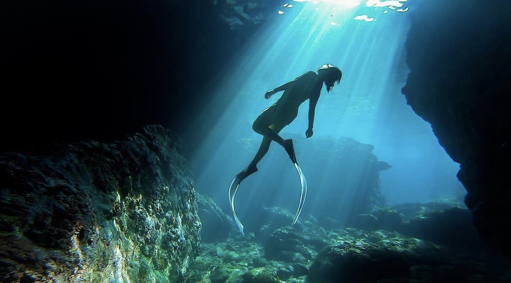
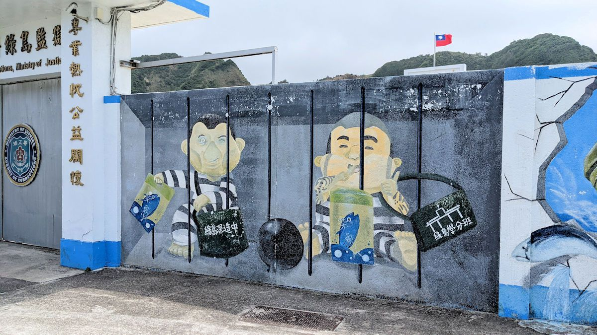
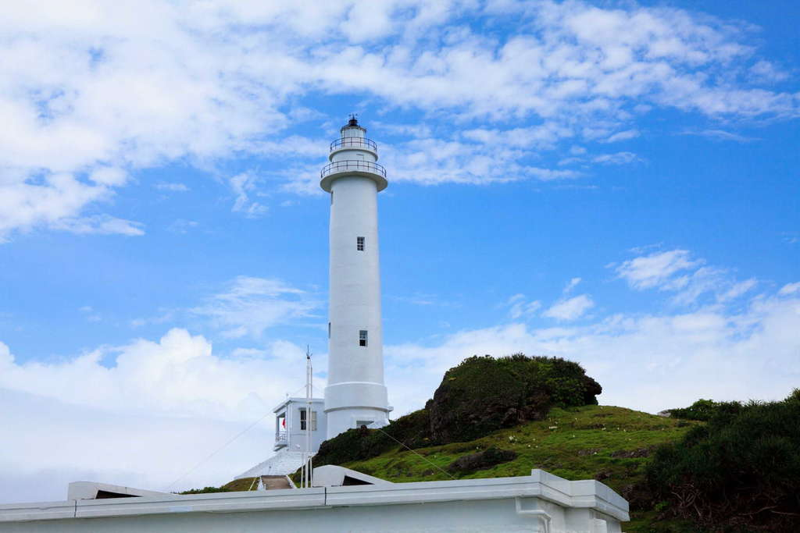
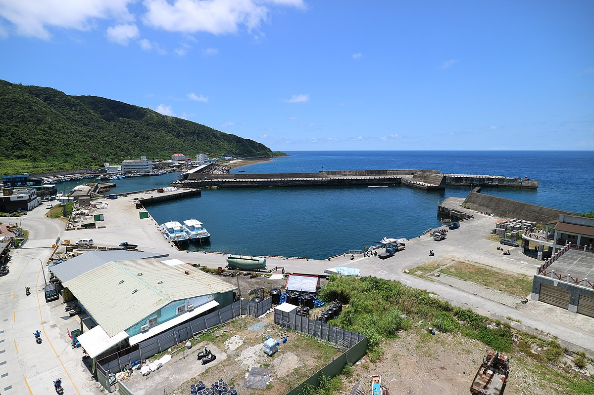
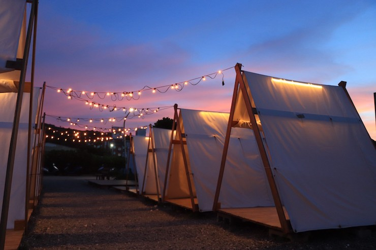
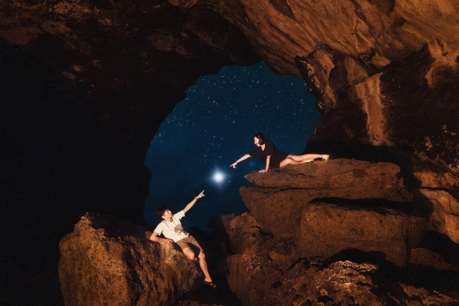

藍洞潛水
藍洞潛水
綠島藍洞是位於綠島的一處海蝕洞，
洞窟內的海水因日光折射而呈現神秘的藍光，
還有海天一線的美景、五彩斑斕的珊瑚礁石，
絕對是潛水愛好者的秘密基地，
由專業教練帶領，深入藍洞看見最美秘境，
欣賞豐富的海洋生態、珊瑚礁與天然海蝕洞。
更多資訊

綠島監獄
綠島監獄
綠島曾經是世界上監獄密度最高的島嶼，
小小的島嶼上有三所不同型態的監獄，
是臺灣各監獄的最後一道防線，
目前仍監禁被判處重刑的刑事罪犯。
如今的綠島監獄仍有嚴肅緊繃的氛圍存在，
除了可以在監獄門口拍照留念外，
還販賣受刑人製作的名產、紀念品，讓遊客選購。
更多資訊

綠島燈塔
綠島燈塔
綠島舊名火燒島，是台灣及太平洋船隻的必經之地，
由於綠島外海暗礁岩石密佈、時有船隻觸礁失事，
綠島燈塔興建於日治時期昭和十四年(1939)，
燈塔矗立於機場北端海岬，白天在塔頂可俯瞰全島，
到了夜晚，它便搖身一變成為「航海人的守護者」，
是漁船、飛機的重要指標，與滿天星斗相襯，
美麗的景致也是攝影師拍攝銀河星空的好地方。
更多資訊

中寮漁港
中寮漁港
中寮漁港位在綠島燈塔的附近，
走主要幹道去燈塔的路上就會遇到這個小港口。
這裡不是綠島主要港口，僅有碼頭及防波堤等設施，
所以來往船隻少，相比下有種寧靜、世外桃源的感覺。
附近是生態保育區，吸引許多人練習浮潛和跳港玩水！
更多資訊

深入・島嶼酒吧
深入・島嶼酒吧
來到綠島旅遊，享受不按牌理出牌的浪漫情調，
那你肯定會喜歡「深入・島嶼酒吧」。
走進滿滿海島風情・在舒適的帳篷裡，
點杯忘情水，加上店家的招牌下酒菜，
吹著海風、聽著海浪聲，享受熱情浪漫的綠島之夜。
更多資訊

綠島-藍眼睛